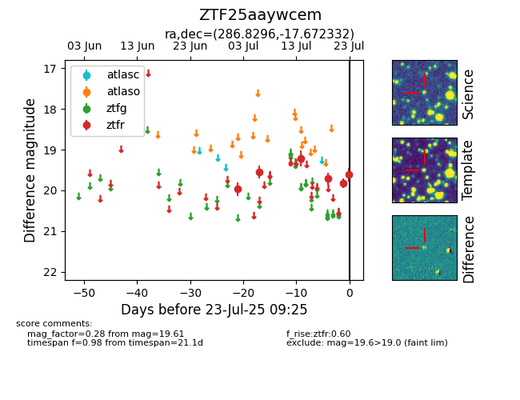

Target ZTF25aaywcem at 2025-07-23 11:48, see:
FINK: fink-portal.org/ZTF25aaywcem
Lasair: lasair-ztf.lsst.ac.uk/objects/ZTF25aaywcem
ALeRCE: alerce.online/object/ZTF25aaywcem
alt names
ZTF25aaywcem (ztf,fink)
coordinates:
equatorial (ra, dec) = (286.8296,-17.67233)
galactic (l, b) = (18.7559,-11.36951)
photometry
last ztfr=19.61
6 ztfr detections
